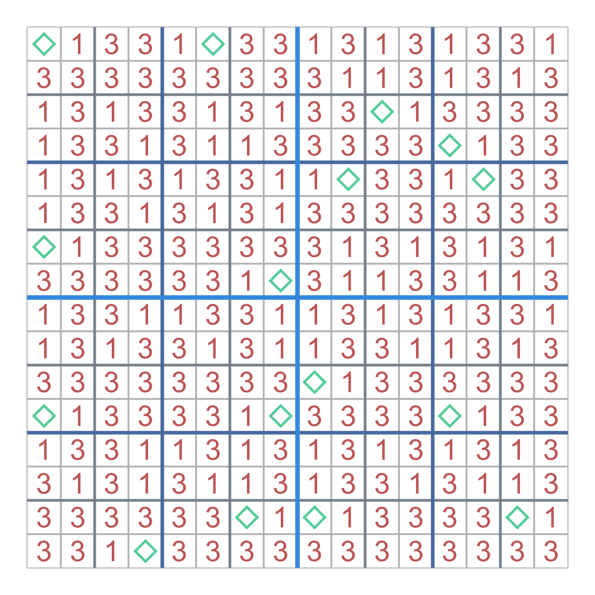
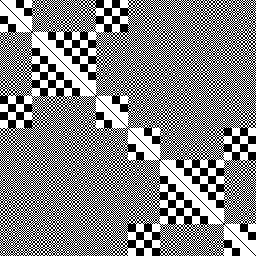

Hi! My name is Darrion, and I am a Ph.D. student at Vanderbilt
University studying mathematics.
In 2024, I completed my undergraduate studies Bard College
majoring in
both
mathematics and computer science.
I have a wide variety of interests, but I am primarily interested in studying Sidon sets in finite
Boolean groups, almost perfect nonlinear (APN) functions,
Boolean functions, linear codes, and graph-theoretical connections to these topics.
Feel free to contact me at my email above!
Upcoming Events
During the second week of September 2026, I will be attending the 11th International Workshop on
Boolean Functions and
their Applications (BFA) in Sogndal, Norway as an invited speaker.
The week after, I will also attend Finite Geometry, Combinatorics, Boolean Functions and their
Links (Pott65) in Magdeburg, Germany as an invited speaker.
We say an \((n,n)\)-function \(F \colon \mathbb{F}_2^n \to \mathbb{F}_2^n\) is a crooked function
if
for any nonzero \(a \in \mathbb{F}_2^n\), the image of \(D_aF(x)=F(x)+F(x+a)\) is an affine
hyperplane.
The only known examples of crooked functions are all quadratic almost perfect nonlinear (APN), or
equivalently, for every known crooked function, \(D_aF\) is affine for all \(a \in
\mathbb{F}_2^n\).
The ortho-derivative \(\pi_F \colon\mathbb{F}_2^n \to \mathbb{F}_2^n\) of a crooked function \(F\)
is
the function such that \(\pi_F(0)=0\), and for any nonzero \(a\), the set \(\{0,\pi_F(a)\}^\perp\)
is
the underlying vector space of \(\mathrm{Im}(D_aF)\).
We prove that for \(n \geq 4\) and a crooked function \(F\), if \(k\) is a non-negative integer
such
that \(F\) has \(2^k\) quadratic component functions, \(\pi_F\) has at least \(2^n-2^{n-k}\)
nonzero
components of algebraic degree \(n-2\).
In particular, we resolve Gorodilova's conjecture that every nonzero component of \(\pi_F\) has
algebraic degree \(n-2\) when \(F\) is quadratic APN.
As a corollary, we prove that for any even \(n \geq 4\), any crooked \((n,n)\)-function with at
least
one quadratic component has at least \(5\) semi-bent components.
As a second main result, for \(n \geq 4\), we associate to a crooked function \(F\) a quadratic
function \(\varepsilon_F \colon \mathbb{F}_2^n \to \mathbb{F}_2^n\) that satisfies a strong
geometric-combinatorial condition regarding the sums of \(F\) over \(2\)-dimensional linear
subspaces.
Furthermore, we obtain a congruence result on a problem on \(m\)-sequences introduced by Johansen,
Helleseth, and Kholosha, and we determine the exact algebraic degrees of some Boolean functions
associated to the bent and near-bent components of particular classes of plateaued vectorial
functions.
Quadratic Boolean functions (that is, Boolean functions of algebraic degree at most 2), bent
Boolean functions (i.e. maximally nonlinear Boolean functions in even numbers of variables) and,
as we prove in this paper, partially-bent Boolean functions (i.e. affine extensions of bent
functions to linear super-spaces), share a strong property: all their restrictions to affine
hyperplanes are plateaued (i.e. have a Walsh transform valued in a set of the form \(\{0,\pm
\lambda\}\), where \(\lambda\) is a positive integer called the amplitude). In this paper we
determine for any \(n\) and \(k< n\) the class \(C^n_k\) of those \(n\)-variable Boolean functions
whose restrictions to all \(k\)-dimensional affine subspaces of \(\mathbb{F}_2^n\) are plateaued
(of any amplitude). We characterize partially-bent (resp., quadratic) Boolean functions as those
functions that are plateaued on any affine hyperplane (resp., any affine subspace of dimension
\(k\), where \(3 \leq k \leq n-2\), while these are all Boolean functions for \(0\leq k\leq
2\)). For \(n\geq 5\), each of the following classes of Boolean functions happens then to be
strictly included in the next one: quadratic functions, partially-bent functions, the
restrictions of partially-bent functions to affine hyperplanes, plateaued functions, the
restrictions of plateaued functions to affine hyperplanes, and all Boolean functions. We leave
open the two problems of determining exactly what are the third and fifth of these classes (we
begin the study of the first of these two classes by giving a non-trivial characterization). Our
characterization of partially-bent (resp., quadratic) functions extends to strongly plateaued
vectorial functions. We state an open question on vectorial functions that happens to be related
to an important one on crooked functions.
Whether two distinct APN functions can have a Hamming distance of \(1\) remains an open problem.
In 2020, L. Budaghyan et al. introduced a new CCZ-invariant \(\Pi_F\) which can be used to provide
lower bounds on the Hamming distance between a given APN function \(F \colon \mathbb{F}_2^n \to
\mathbb{F}_2^n\) and other APN functions. Lower bounds on the distance from an APN function \(F\)
to any other APN function \(G\) are known when \(F\) is an almost bent (AB) function or when \(F\)
is a \(3\)-to-\(1\) quadratic function with \(n\) even. In this paper, we reinterpret \(\Pi_F\) in
terms of the multiplicities of the 3-sums of the graph \(\mathcal{G}_F=\{(x, F(x)) : x \in
\mathbb{F}_2^n\}\) of \(F\) as a Sidon set, which we call exclude multiplicities. For even \(n\),
we establish lower bounds on the distance between \(F\) and any other APN function \(G\) when
\(F\) is plateaued APN, and we generalize a previously known lower bound for quadratic
\(3\)-to-\(1\) functions to the case where \(F\) is plateaued \(3\)-to-\(1\) (e.g., when \(F\) is
a Kasami function). For odd \(n\), we derive new lower bounds when \(F\) is the APN inverse
function over \(\mathbb{F}_{2^n}\). We also study how the exclude multiplicities of
\(\mathcal{G}_F\) are directly connected to the existence of linear structures of \(\gamma_F\)
when \(F\) is plateaued APN and to the ortho-derivative when \(F\) is a quadratic APN function. In
particular, we prove that \(\gamma_F\) has no nontrivial linear structures when \(F\) is plateaued
APN. We also use the CCZ-invariance of exclude multiplicities to prove that the
Brinkmann-Leander-Edel-Pott function is not CCZ-equivalent to a plateaued function.
A Sidon set \(S\) in \(\mathbb{F}_2^n\) is a set such that \(x+y=z+w\) has no solutions \(x,y,z,w
\in S\) with
\(x,y,z,w\) all distinct.
In this paper, we prove various results on Sidon sets by using or generalizing known cryptographic
results.
In particular, we generalize known results on the Walsh transform of almost perfect nonlinear
(APN)
functions to Sidon sets.
One such result is that we classify Sidon sets with minimal linearity as those that are
\(k\)-covers.
That is, Sidon sets with minimal linearity are those Sidon sets \(S \subseteq \mathbb{F}_2^n\)
such that there
exists \(k > 0\) such that for any \(p \in \mathbb{F}_2^n \setminus S\), there are exactly \(k\)
subsets
\(\{x,y,z\} \subseteq S\) such that \(x+y+z = p\).
From this, we also classify \(k\)-covers by means of the Cayley graph of a particular Boolean
function, and we construct the unique rank \(3\) strongly regular graph with parameters \((2048,
276,
44, 36)\) as the Cayley graph of a Boolean function.
Finally, by computing the linearity of a particular family of Sidon sets, we increase the
best-known
lower bound of the largest Sidon set in \(\mathbb{F}_2^{4t+1}\) by \(1\) for all \(t \geq 4\).
The Cayley table of \(\mathbb{F}_2^n\) represents identifications in the Cayley graph of a
Boolean function.
A Sidon set \(S\) in \(\mathbb{F}_2^n\) is a set such that the pairwise sums of distinct points
are
all
distinct.
The exclude points of a Sidon set \(S\) are the sums of three distinct points in \(S\), and the
exclude
multiplicity of a point in \(\mathbb{F}_2^n \setminus S\) is the number of such triples in \(S\)
it
is equal to.
We call the function \(d_S \colon \mathbb{F}_2^n \setminus S \to \mathbb{Z}_{\geq 0}\) taking
points
in \(\mathbb{F}_2^n
\setminus S\) to their exclude multiplicity the exclude distribution of \(S\).
We say that \(d_S\) is uniform on \(\mathcal{P}\) if \(\mathcal{P}\) is an equally-sized partition
\(\mathcal{P}\) of \(\mathbb{F}_2^n \setminus S\) such that \(d_S\) takes the same values an equal
number of times
on every element of \(\mathcal{P}\).
In this paper, we use APN plateaued functions with all component functions unbalanced to construct
Sidon sets \(S\) in \((\mathbb{F}_2^n)^2\) whose exclude distributions are uniform on natural
partitions of
\((\mathbb{F}_2^n)^2 \setminus S\) into \(2^n\) elements.
We use this result and a result of Carlet to determine exactly what values the exclude
distributions
of the graphs of the Gold and Kasami functions take and how often they take these values.

Some Sidon sets such as this one have local repetition in their exclude points.
Let \(\mathbb{F}_p^n\) be the \(n\)-dimensional vector space over \(\mathbb{F}_p\).
The graph \(\mathcal{G}_F = \{ (x, F(x)) : x \in \mathbb{F}_p^n \}\) of a vectorial function \(F
\colon
\mathbb{F}_p^n \to \mathbb{F}_p^m\) can have interesting combinatorial properties depending on
varying cryptographic conditions on \(F\).
A vectorial Boolean function \(F \colon \mathbb{F}_2^n \to \mathbb{F}_2^n\) is almost perfect
nonlinear (APN) if there are at most \(2\) solutions to the equation \(F(x+a) + F(x) = b\) for all
\(a,b
\in \mathbb{F}_2^n\) where \(a \neq 0\).
In this paper, we classify APN functions and important subclasses of APN functions in graph
theoretical terms using the Kneser graph of all translations of \(\mathcal G_F\).
We also study the properties of \(\mathcal G_F\) as a Sidon set.
In particular, we introduce the notion of uniform exclude distributions, and we study APN
functions
whose graphs have uniform exclude distributions.

The adjacency matrix of \(\overline{Cay(\gamma_F)}\) where \(F(x)=x^3\) and \(n=4\).
Topological methods in zero-sum Ramsey theorey
Florian Frick, Jacon Lehmann Duke, Meenakshi McNamara, Hannah Park-Kaufmann, Steven Raanes, Steven
Simon, Darrion Thornburgh, Zoe Wellner
Forum of Mathematics, Sigma, November 2025;
DOI,
arXiv
A landmark result of Erdős, Ginzburg, and Ziv (EGZ) states that any sequence of \(2n-1\) elements
in \(\mathbb{Z}/n\)
contains a zero-sum subsequence of length \(n\). While algebraic techniques have predominated in
deriving many
deep generalizations of this theorem over the past sixty years, here we introduce topological
approaches to zero-
sum problems which have proven fruitful in other combinatorial contexts. Our main result is a
topological criterion
for determining when any \(\mathbb{Z}/n\)-coloring of an \(n\)-uniform hypergraph contains a
zero-sum hyperedge. In addition
to applications for Kneser hypergraphs, for complete hypergraphs our methods recover Olson’s
generalization of
the EGZ theorem for arbitrary finite groups. Furthermore, we give a fractional generalization of
the EGZ theorem
with applications to balanced set families and provide a constrained EGZ theorem which imposes
combinatorial
restrictions on zero-sum sequences in the original result.
We define a cap in the affine geometry \(\mathrm{AG}(n,2)\) to be a subset in which any collection
of \(4\) points is
in general position.
In this paper, we classify, up to affine equivalence, all caps in \(\mathrm{AG}(n,2)\) of size \(k
\leq 9\). As a
result, we obtain a complete characterization of caps in dimension \(n \leq 6\), in particular
complete
and maximal caps. Since the EvenQuads card deck is a model for \(\mathrm{AG}(6,2)\), as a
consequence, we
determine the probability that an arbitrary \(k\)-card layout contains a quad.
This dataset contains the exclude multiplicites of the graphs of known quadratic APN
functions over \(\mathbb{F}_2^8\).
This dataset is a work in progress.
In short, this online web-based tool visualizes sum-free sets in \(\mathbb{F}_2^n \setminus \{0\}\)
for \( 2 \leq n \leq 14\).
Projective Set is a card game,
similar to the card game Set, and the
cap sets in Projective Set are exactly the sum-free sets in \(\mathbb{F}_2^6 \setminus \{0\}\).
The Projective Set Visualizer (ProSet Vis) is an online web-based tool forked from the Qap
Visualizer that aids in constructing cap sets in Projective Set.
{kind=link}